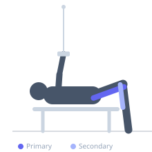
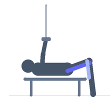

Exercise guide / Lying Floor Cable Hamstring Curl
Lying Floor Cable Hamstring Curl
A hamstring curl performed lying prone on the floor with a cable ankle attachment from a low pulley. Unlike the lying leg curl machine, this variation uses a cable that provides constant tension through the full range, including the lockout position where the machine lever arm would have minimal mechanical advantage. The floor position and cable angle together create a unique hamstring isolation stimulus that complements machine and dumbbell curl variations.
Primary muscles
biceps femoris long head
semitendinosus
semimembranosus
Secondary muscles
gastrocnemius medial
Stabilizers
erector spinae
Equipment
Cable Machine (Low Pulley)


Starting position
- Lie prone on the floor facing away from a low cable pulley. Attach an ankle cuff to one ankle and connect it to the cable. Legs are extended with a slight bend in the working knee.
Setup
- Lie far enough from the pulley that the cable is taut at full knee extension. The hip must remain flat against the floor throughout.
Steps
- Step 1: Begin prone with the ankle cuff attached and the leg extended.
- Step 2: Curl the working leg by bending the knee, bringing the heel toward the glute.
- Step 3: Hold the fully curled position for 1-2 seconds.
- Step 4: Lower the leg slowly back to the extended starting position. Repeat, then switch legs.
Coaching cues
- Keep the hip flat — do not let it rise during the curl
- Feel the hamstring pull the heel toward the glute — not the glute squeezing the heel up
- Slow on the way down — the cable fights you all the way back to the start
Breathing
- Exhale during the curl. Inhale during the return.
Range of motion
- Full extension at the bottom. Maximum knee flexion (heel to glute) at the top.
Tempo
- 2s curl, 1s hold, 3s slow eccentric return.
Common mistakes
- Lifting the hip off the floor during the curl — the hip must stay flat
- Using a cable tension so high that full range of motion is compromised
- Rushing the eccentric — the slow return is where most of the hypertrophy stimulus occurs
Safety
- Ensure the ankle cuff is securely attached before starting
- If lower back discomfort occurs, place a folded towel under the abdomen to reduce lumbar stress
Training
- hypertrophy: 10–15 reps
- hypertrophy: 2–4 sets
- Rest: {'hypertrophy': 90}